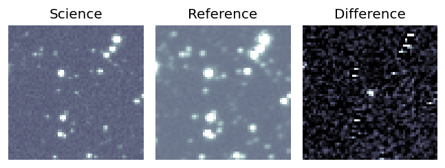
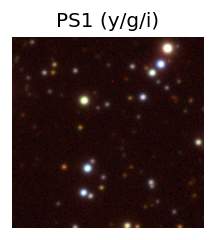
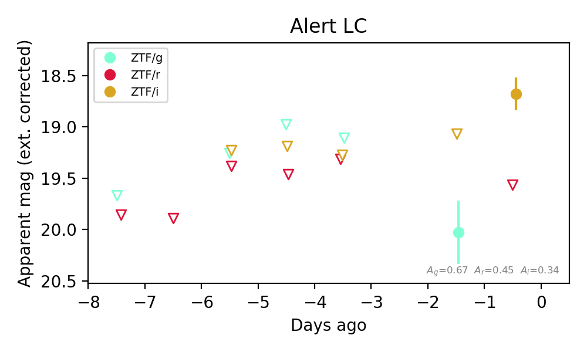
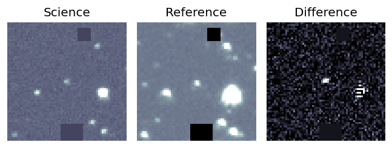
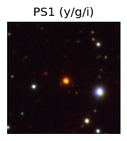
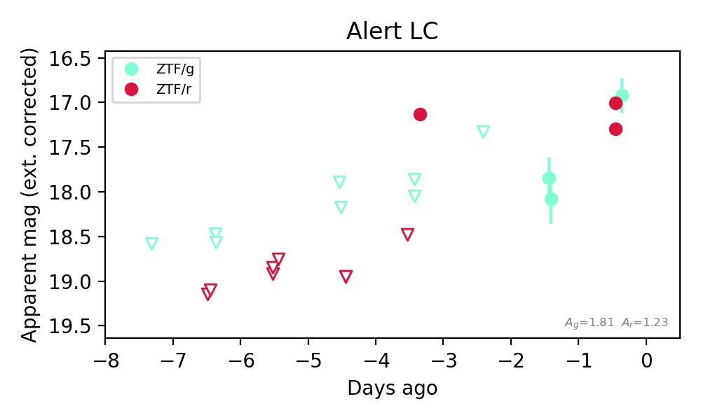

Candidate List 20260829Last night — ZTF: 1,383 passed basic cuts (61 young) · LSST: 0 passed basic cuts (0 young)Previous Day Next Day
Section 1: New Sources (age<1d) Section 2: Old (1-5d) sources observed last nightplaceholder
Section 1: New Afterglow/FBOT Cands Last Night (0)
Section 2: Older Sources Observed Last Night (6)
0. [ZTF] ZTF26abqfafz (Afterglow?) [Back to Top] [Share] [Trigger Swift] [Fritz Alert] [Fritz Source] [Lasair]RA, Dec: 270.61735, 10.11689 18h 2m28.16s, 10d 7m0.79sGalactic (l, b): 36.56867, 15.41916 ext(g-r) = 0.154


TESS: Sectors [ 80 118]
PS1: 1 source in 3 arcsec Closest: d = 7.19 arcsec photoz=0.76+/-0.27 peak abs mag = -25.45
LegacySurvey: 0 sources in 3 arcsec

Extinction-corrected gr color:
From alerts: -0.7 +/- 0.23 mag
Extinction-corrected gi color:
From alerts: -0.58 +/- 0.4 mag
Extinction-corrected ri color:
From alerts: -0.12 +/- 0.32 mag
Consistent with synchrotron, g-r>0!
Rise Rate:
g: 1.63 mag/day
r: 1.75 mag/day
i: 0.3 mag/day
Fade Rate:
g: 0.19 mag/day
r: 0.2 mag/day
i: 0.17 mag/day
1. [ZTF] ZTF26abqqrpt (Afterglow?) [Back to Top] [Share] [Trigger Swift] [Fritz Alert] [Fritz Source] [Lasair]RA, Dec: 300.1858, 50.07426 20h 0m44.59s, 50d 4m27.34sGalactic (l, b): 84.4113, 10.34504 ext(g-r) = 0.125


TESS: Sectors [ 14 15 16 41 54 55 56 74 75 76 81 83 120 121]
PS1: 0 sources in 3 arcsec
LegacySurvey: 0 sources in 3 arcsec

Extinction-corrected gr color:
From alerts: -0.05 +/- 0.22 mag
Consistent with synchrotron, g-r>0!
Rise Rate:
g: 0.2 mag/day
r: 13.48 mag/day
Fade Rate:
2. [ZTF] ZTF26abqtrgn (FBOT?) [Back to Top] [Share] [Trigger Swift] [Fritz Alert] [Fritz Source] [Lasair]RA, Dec: 21.24794, 36.61024 1h24m59.51s, 36d36m36.88sGalactic (l, b): 130.40381, -25.77421 ext(g-r) = 0.06


TESS: Sectors [17 57 85]
SDSS (<15 kpc):Found SDSS phot-z: z=0.09; peak abs mag = -18.85
PS1: 1 source in 3 arcsec Closest: d = 3.29 arcsec photoz=0.11+/-0.02 peak abs mag = -19.53
LegacySurvey: 0 sources in 3 arcsec

Extinction-corrected gr color:
From alerts: -0.51 +/- 0.26 mag
Rise Rate:
g: 0.28 mag/day
r: 0.25 mag/day
Fade Rate:
3. [ZTF] ZTF26abramlb (FBOT?) [NED transient: PSO J011.2292+41.5531 (V*, 8.5″) — reported, not trusted] [Back to Top] [Share] [Trigger Swift] [Fritz Alert] [Fritz Source] [Lasair]RA, Dec: 11.22607, 41.55293 0h44m54.26s, 41d33m10.53sGalactic (l, b): 121.62, -21.30218 ext(g-r) = 0.488


TESS: Sectors [17 57 84]
PS1: 1 source in 3 arcsec Closest: d = 1.09 arcsec photoz=0.16+/-0.03 peak abs mag = -22.50
LegacySurvey: 0 sources in 3 arcsec

Extinction-corrected gr color:
From alerts: -0.59 +/- 0.13 mag
Rise Rate:
g: 0.88 mag/day
r: 1.06 mag/day
Fade Rate:
4. [ZTF] ZTF26abrcnyg (FBOT?) [Back to Top] [Share] [Trigger Swift] [Fritz Alert] [Fritz Source] [Lasair]RA, Dec: 277.33641, 9.38961 18h29m20.74s, 9d23m22.61sGalactic (l, b): 38.85606, 9.14323 ext(g-r) = 0.214


TESS: Sectors [ 80 118]
PS1: 1 source in 3 arcsec Closest: d = 2.20 arcsec photoz=0.63+/-0.02 peak abs mag = -24.25
LegacySurvey: 0 sources in 3 arcsec

Extinction-corrected gi color:
From alerts: 0.96 +/- 99 mag
Extinction-corrected ri color:
From alerts: 0.88 +/- 99 mag
Rise Rate:
i: 0.37 mag/day
Fade Rate:
5. [ZTF] ZTF26abrdgws (Afterglow?) [Back to Top] [Share] [Trigger Swift] [Fritz Alert] [Fritz Source] [Lasair]RA, Dec: 308.23163, 51.24948 20h32m55.59s, 51d14m58.13sGalactic (l, b): 88.21931, 6.71377 ext(g-r) = 0.579


TESS: Sectors [ 15 16 41 56 75 76 82 83 120 121]
PS1: 0 sources in 3 arcsec
LegacySurvey: 0 sources in 3 arcsec

Extinction-corrected gr color:
From alerts: -0.17 +/- 0.2 mag
Consistent with synchrotron, g-r>0!
Rise Rate:
g: 0.96 mag/day
r: 7.15 mag/day
Fade Rate: